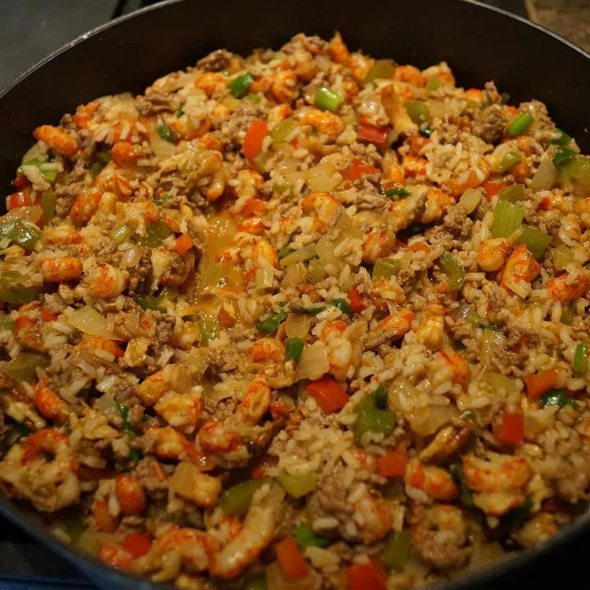

Crawfish Dressing

Authentic Crawfish Dressing
This is one of our favorite recipes. It goes great with fried turkey, and makes a large portion.
A combination of Cajun ingredients makes for a delicious dressing.
Ingredients
- 1 ½ cups water
- ¾ cup uncooked long-grain white rice
- 1 pound lean ground beef
- 1 medium onion, chopped
- 2 stalks celery, chopped
- 1 green bell pepper, chopped
- 1 red bell pepper, chopped
- 2 cloves garlic, minced
- 2 pounds frozen peeled crawfish tails, thawed
- 1 cup toasted, chopped pecans
- ¼ cup butter
- 1 bunch green onions, chopped
- 2 tablespoons Creole seasoning
- ½ teaspoon black pepper
- 1 tablespoon chopped fresh parsley
Steps
- In a medium saucepan, bring water to a boil. Stir in rice. Reduce heat, cover, and simmer for 20 minutes,
until rice is tender and liquid has been absorbed.
- Preheat oven to 350 degrees F (175 degrees C). Lightly grease a medium baking dish.
- In a large, heavy skillet over medium heat, stir together ground beef, onion, celery, green bell pepper, red
bell pepper, and garlic. Cook until beef is evenly browned and vegetables are tender.
- Stir cooked rice, crawfish tails, pecans, butter, and green onions into the ground beef mixture. Season with
Creole seasoning and pepper. Continue cooking about 3 minutes, until well mixed. Transfer to the prepared
baking dish.
- Bake 25 minutes in the preheated oven, or until lightly browned. Garnish with parsley